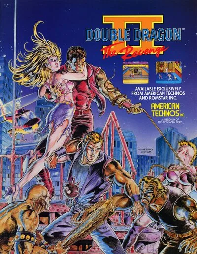

FBA (FinalBurn Alpha)
Double Dragon II - The Revenge
- Año: 1988
- Desarrollador: Technos Japan
- Género: Lucha / 2.5D
- Jugadores: 2 jugadores
Una misteriosa adivina advierte a Billy y Jimmy Lee del ascenso de un poderoso enemigo en Egipto. Como los hermanos Lee buscan un verdadero desafío para poner a prueba sus artes marciales, aceptan enfrentarse a él. Emprenden un viaje por el mundo, en el que se les unen nuevos aliados, para hacerse con la famosa «Piedra de Rosetta».
La tercera y última entrega arcade de la saga Double Dragon (sin contar el juego de lucha posterior de Neo Geo basado en la película) cambia por completo la jugabilidad y los gráficos de las dos primeras. Pueden jugar 2 o 3 jugadores, según el mueble y la configuración. El tercer jugador controla a Sonny, un hermano Lee vestido de amarillo exclusivo de este juego. Desaparecen técnicas de los juegos anteriores, como agarrar del pelo o el codazo, pero se añaden otras nuevas, como la llave de espalda y la patada huracán espalda con espalda, y se puede correr pulsando dos veces el joystick a izquierda o derecha.
El juego tiene tiendas de armas en las que se compran mejoras metiendo más fichas. Las mejoras cambian según la fase y son estas: Personajes extra: permite controlar a un nuevo personaje que sustituye al actual cuando muere. Hay tres tipos además de los hermanos Lee. Los hermanos Urquídez (Roney, Sunny, Jonny): luchadores europeos altos, especialistas en agarres. Son los que más energía tienen de los cuatro tipos. Se pueden tener hasta tres de reserva. Los hermanos Chin (Seimei, Taimei, Sinmei): chinos rechonchos con ataques potentes. Los hermanos Oyama (Masao, Kunio, Akira): maestros japoneses de kárate con kimono, especialistas en ataques rápidos. ? Trucos: añade la patada huracán y el cabezazo apoyado en un brazo a los movimientos del jugador. Si el personaje muere, el siguiente de reserva (si lo hay) hereda estas técnicas. Armas: da al jugador unos nunchakus o una espada. Solo los Lee pueden comprar y usar armas. Energía: devuelve la vida del personaje al 150 %. Potencia: aumenta la agilidad del personaje.
El juego tiene 5 fases:
Misión 1 - América: los enemigos son matones y moteros. La primera zona transcurre en el centro de una ciudad. Tras derrotar a la primera oleada, el jugador entra en un almacén donde los moteros intentan atropellarlo con sus motos. El jefe es Jim, un motero pelirrojo con chaqueta de cuero.
Misión 2 - China: los enemigos son artistas marciales especialistas en patadas voladoras. La fase es un único nivel en el campo, cerca de la Gran Muralla. El jefe es Li Cheng-Long, un experto en artes marciales Shaolin que se parece a Bruce Lee. Cuando le queda poca vida, saca su bastón.
Misión 3 - Japón: los enemigos son samuráis con espada. La primera zona es el exterior de un castillo, con trampas de bambú y enemigos que salen de las paredes. La segunda es el interior del castillo, donde el jugador se enfrenta a unos cuantos espadachines más antes del jefe, Ranzou, un ninja. Ataca con estrellas arrojadizas y bombas de humo, y se divide en tres cuando le queda poca vida.
Misión 4 - Italia: un único nivel en las ruinas de un coliseo. Los enemigos son arqueros romanos. Tras derrotar a la mayoría, el jefe Giuliano, con armadura de gladiador, intenta atropellar al jugador con su caballo. Cuando caen todos los arqueros, Giuliano desmonta al final del nivel y pelea. Lleva una lanza larga y puede bloquear con su escudo.
Misión 5 - Egipto: la fase final tiene siete niveles, entre ellos un desierto, un bosque subterráneo, una sala de trampas con columnas de piedra y manos gigantes que salen del suelo, y una sala con un disco volador. Entre los enemigos hay hombres árbol vivientes y criaturas de roca.
La mayoría de los enemigos vuelven del Double Dragon original, algunos con un lavado de cara, pero los jefes de fase son todos nuevos. Los enemigos son: * Williams: tiene una cara más salvaje y el pelo más largo. Ahora puede correr hacia el jugador y hacer la rueda. Lanza sus cuchillos en el aire y a veces lleva una pala que arroja contra el jugador. * Rowper: tiene barba y parche en el ojo, pero por lo demás es casi igual que el original. Lleva palas y a veces levanta objetos grandes. * Linda: ahora lleva cresta y pintura en la cara. También salta desde plataformas y da codazos. Además de la bola con cadena, lleva granadas y cuchillos. * Oharra: un forzudo bien afeitado. Sustituye a Abobo del primer juego y tiene sus mismos ataques. * Bolo: Oharra con otra cabeza, pelo largo y barba. Sustituye a la versión de Abobo con cresta del primer juego. * Jeff: igual que el original, pero ahora lleva granadas. * Burnov: jefe de la misión 1. Un luchador obeso con la cara tapada por una máscara. Agarra al jugador y le da puñetazos en la cara. Al morir, se levanta, grita y desaparece, dejando solo su ropa. En encuentros posteriores revive al menos una vez. * Abore: jefe de la misión 2. Un forzudo enorme con tirantes y gafas de sol a lo Terminator. Sus bofetadas y placajes hacen muchísimo daño. * Chin Taimei: jefe de la misión 3. Un artista marcial chino armado con dos bastones de kali. Además de su combo de bastones que roba energía, tiene una patada en salto y una patada de barrido. * Willy: jefe de la misión 4. Es como en el juego original, pero ahora viste de rojo. Sigue usando la misma ametralladora. * El clon: tras derrotar a Willy, el jugador se enfrenta a su propio doble malvado. Tiene todas las técnicas del jugador, pero además lanza rayos de energía y puede poseer su cuerpo para robarle energía.
Controles
Tres botones, todos en la fila de abajo.
| Panel | Juego |
|---|---|
 | Saltar |
 | Dar un puñetazo |
 | Dar una patada |
  | Empezar |
 | Meter una moneda |
+  | Salir del juego |
El panel en FBA (FinalBurn Alpha)

Longplay

Partida completa de la recreativa (24 min), de AL82 Retrogaming Longplays: Double Dragon II: The Revenge Longplay (Arcade) [60 FPS].